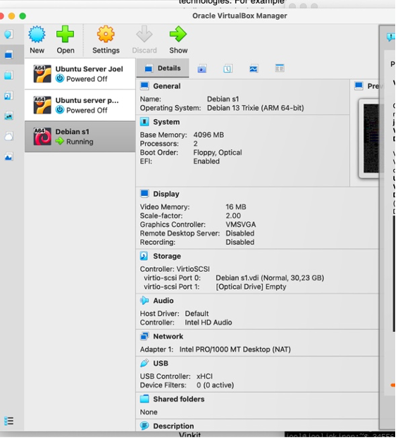
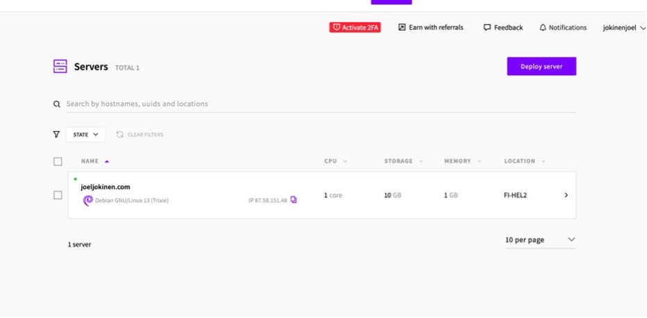
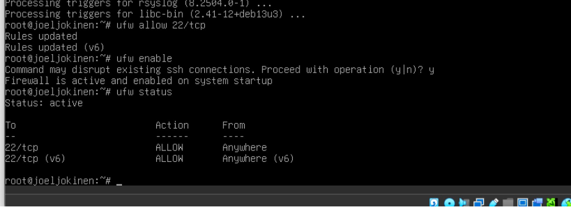
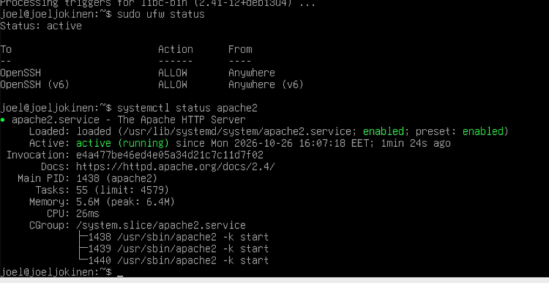

Tässä harjoituksessa asensin Debian-palvelimelle SSH-palvelimen ja Ansible-ohjelmiston. Tämän jälkeen määritin SSH-yhteyden localhostiin ja suoritin Ansiblella yksinkertaisen Hello World -tehtävän.
Aloitin asentamalla Debian-palvelimelle SSH-palvelimen. Päivitin ensin pakettiluettelon
komennolla apt update ja asensin SSH-palvelimen komennolla:
apt install openssh-server
Tämän jälkeen käynnistin SSH-palvelun ja määritin sen käynnistymään automaattisesti järjestelmän käynnistyessä:
systemctl enable --now ssh
Tarkistin vielä palvelun tilan komennolla systemctl status ssh.
Lopuksi testasin yhteyden localhostiin komennolla:
ssh joel@localhost
SSH-palvelimen tila näkyy alla olevassa kuvassa.

Minulla oli jo aikaisemmasta tehtävästä SSH-avainpari, joten en luonut uutta avainta. SSH-avaimen voi tarvittaessa luoda komennolla:
ssh-keygen -t ed25519
Seuraavaksi kopioin julkisen SSH-avaimen localhostin käyttäjälle komennolla:
ssh-copy-id joel@localhost
Komento lisäsi julkisen avaimen käyttäjän joel tiedostoon
~/.ssh/authorized_keys. Tämän jälkeen testasin SSH-yhteyden uudelleen
komennolla ssh joel@localhost. Yhteys onnistui ilman käyttäjätilin salasanaa,
koska kirjautuminen tapahtui SSH-avaimella.

Seuraavaksi asensin Debian-palvelimelle Ansible-ohjelmiston komennolla:
apt install ansible
Tarkistin asennuksen onnistumisen komennolla:
ansible --version
Loin Ansiblea varten oman hakemiston ja siirryin sen sisälle:
mkdir ansible-hello cd ansible-hello
Loin hakemistoon inventaariotiedoston hosts.ini, johon määritin
localhostin käytettäväksi SSH-yhteyden kautta:
localhost ansible_connection=ssh ansible_user=joel ansible_ssh_private_key_file=/home/joel/.ssh/id_ed25519
Testasin yhteyden toimivuuden Ansiblella komennolla:
ansible all -a 'uptime' -i hosts.ini
Seuraavaksi loin Ansiblelle asetustiedoston nimeltä ansible.cfg.
Määritin siihen inventaariotiedoston sekä tulosteiden asetukset:
[defaults] inventory = hosts.ini display_args_to_stdout = true
Tämän jälkeen loin playbook-tiedoston nimeltä site.yml.
Tiedostoon määritin, että Ansible suorittaa hello-roolin kaikille inventaarion koneille:
- hosts: all
roles:
- hello
Loin roolia varten tarvittavat hakemistot komennolla:
mkdir -p roles/hello/tasks/
Lopuksi loin hakemistoon tiedoston main.yml, johon kirjoitin seuraavan tehtävän:
- copy:
dest: /tmp/hello-ansible
content: "Hahaa ansiblehan toimii\n"
Tehtävän tarkoituksena on luoda tiedosto /tmp/hello-ansible ja kirjoittaa
sinne määritetty teksti. Suoritin playbookin komennolla:
ansible-playbook site.yml
Ansible suoritti tehtävän onnistuneesti. Testasin vielä lopputuloksen SSH-yhteyden kautta lukemalla luodun tiedoston sisällön:
ssh joel@localhost 'cat /tmp/hello-ansible'
Komento palautti tiedostoon kirjoitetun tekstin, joten Ansible-tehtävä onnistui.


Harjoituksen aikana opin asentamaan SSH-palvelimen ja Ansible-ohjelmiston Debianille. Opin myös määrittämään SSH-avaimilla toimivan yhteyden localhostiin sekä luomaan Ansiblella yksinkertaisen playbookin. Harjoitus osoitti, kuinka Ansiblella voidaan suorittaa tehtäviä etäyhteyden kautta ilman, että komentoja tarvitsee suorittaa jokaisella koneella erikseen.